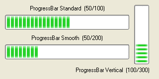

ProgressBarGadget()
语法
Result = ProgressBarGadget(#Gadget, x, y, Width, Height, Minimum, Maximum [, Flags])概要
Creates a ProgressBar gadget in the current GadgetList.
参数
#Gadget A number to identify the new gadget. #PB_Any can be used to auto-generate this number. x, y, Width, Height The position and dimensions of the new gadget. Minimum, Maximum The minimum and maximum values that the progress bar can take. Flags (optional) Flags to modify the gadget behavior. It can be a combination of the following values: #PB_ProgressBar_Smooth : The progress bar is smooth instead of using blocks (Note: On Windows XP with enabled skins and on OS X, this flag has no effect). #PB_ProgressBar_Vertical : The progress bar is in vertical mode.
返回值
Returns nonzero on success and zero on failure. If #PB_Any was used as the #Gadget parameter then the return-value is the auto-generated gadget number on success.
Remarks
A 'mini help' can be added to this gadget using GadgetToolTip().
The following functions can be used to act on the gadget:
- SetGadgetState(): Change progress bar value.
- GetGadgetState(): Get the current progress bar value.
- SetGadgetAttribute(): With the following attributes:#PB_ProgressBar_Minimum : Changes the minimum value. #PB_ProgressBar_Maximum : Changes the maximum value.- GetGadgetAttribute(): With the following attributes:#PB_ProgressBar_Minimum : Returns the minimum value. #PB_ProgressBar_Maximum : Returns the maximum value.This gadget supports the SetGadgetColor() and GetGadgetColor() functions with the following values as 'ColorType'. (Note: Windows only. On Windows XP with enabled skins, this coloring has no effect.)#PB_Gadget_FrontColor: Progressbarcolor #PB_Gadget_BackColor : Backgroundcolor
示例
If OpenWindow(0, 0, 0, 320, 160, "ProgressBarGadget", #PB_Window_SystemMenu | #PB_Window_ScreenCentered) TextGadget (3, 10, 10, 250, 20, "ProgressBar Standard (50/100)", #PB_Text_Center) ProgressBarGadget(0, 10, 30, 250, 30, 0, 100) SetGadgetState (0, 50) ; set 1st progressbar (ID = 0) to 50 of 100 TextGadget (4, 10, 70, 250, 20, "ProgressBar Smooth (50/200)", #PB_Text_Center) ProgressBarGadget(1, 10, 90, 250, 30, 0, 200, #PB_ProgressBar_Smooth) SetGadgetState (1, 50) ; set 2nd progressbar (ID = 1) to 50 of 200 TextGadget (5, 100,135, 200, 20, "ProgressBar Vertical (100/300)", #PB_Text_Right) ProgressBarGadget(2, 270, 10, 30, 120, 0, 300, #PB_ProgressBar_Vertical) SetGadgetState (2, 100) ; set 3rd progressbar (ID = 2) to 100 of 300 Repeat : Until WaitWindowEvent()=#PB_Event_CloseWindow EndIf

参阅
GetGadgetState(), SetGadgetState(), GetGadgetAttribute(), SetGadgetAttribute(), GetGadgetColor(), SetGadgetColor()
已支持操作系统
所有